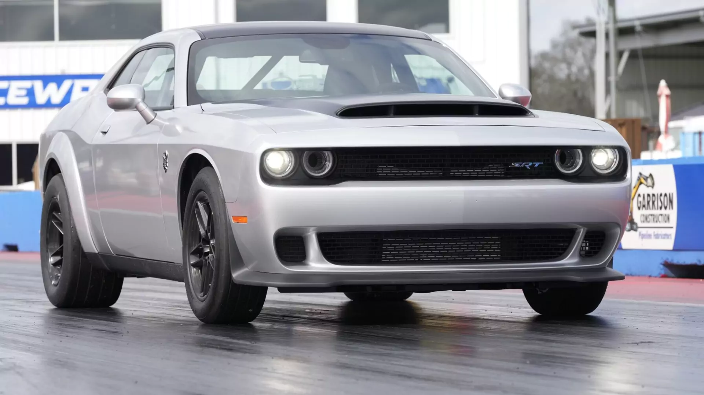
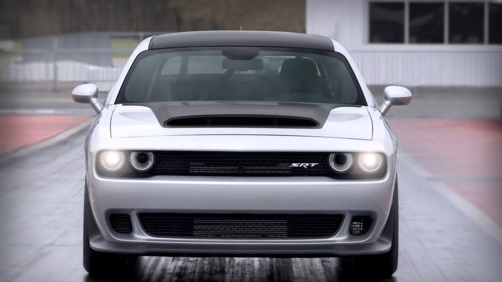
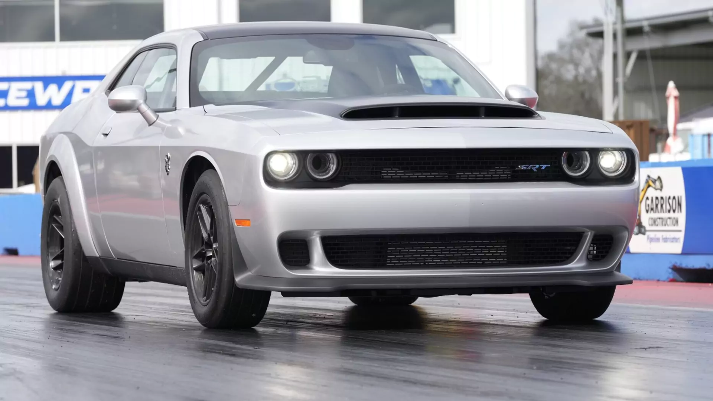
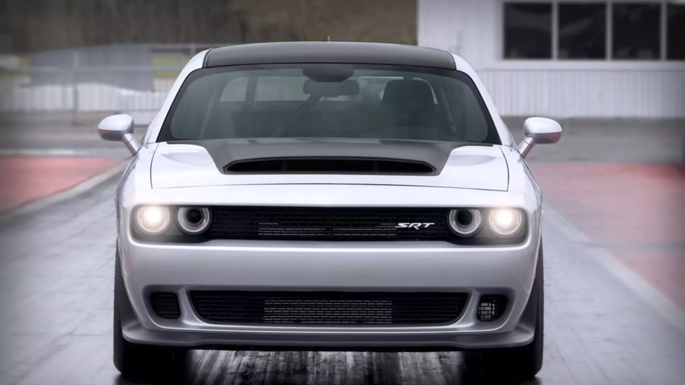

Conheça e importe toda a linha Dodge Challenger 2023 (R/T Scat Pack e SRT Hellcat), os melhores e mais emblemáticos muscle cars do mundo, para o Brasil na Direct Imports, a melhor importadora de carros do país. O Dodge Challenger é um muscle car americano popular que está em produção desde 1970. É um cupê de duas portas com motor potente, tração traseira e estilo agressivo. O Challenger é conhecido por seu design clássico que homenageia sua herança, incorporando tecnologias e recursos modernos.
O Dodge Challenger está disponível em várias versões, cada um com suas características e especificações exclusivas e todas podem ser importadas na Direct Imports. Dependendo do nível de acabamento e das opções selecionadas, o Challenger pode ser equipado com uma variedade de motores, desde um V6 até um V8 superalimentado.
Dodge Challenger R/T Scat Pack
A denominação Scat Pack é uma versão nas famosas linhas muscle car produzidas pela Dodge. A partir de 1968, o Dodge Scat Pack era a família de carros mais rápidos de várias linhas de modelos. A entrada para o Scat Pack era bem simples, todos deveriam percorrer 1/4 de milha abaixo de 14 segundos.
Motor: V8 6.4 SRT Hemi
Transmissão: Automatica
Potência: 491 Cv
Torque: 65,6 kgmf
0-100km/h: 3,9 s
Velocidade Máxima: 280 km/h
Tração: Traseira
Dodge Challenger SRT Hellcat
A porta de entrada da Dodge para os motores supercharged, a personificação da potência extrema e da emoção pura em forma de um muscle car americano.
Motor: V8 de 6,2 litros Supercharged
Potência: 717 cv
Torque: 89,8 kgfm a 4000 RPM
Transmissão: Automática de oito velocidades ou manual de seis velocidades
Freios: Brembo de seis pistões maiores
Amortecedores de suspensão adaptativos
Pneus de performance mais largos
Volante com base plana
Emblemas internos e externos SRT Hellcat
Dodge Challenger SRT Hellcat Redeye
Challenger Hellcat recebe a denominação Redeye manténdo o motor V8 de 6,2 litros com compressor, mas recebe alterações só vistas no SRT Demon, como compressor de 2,7 litros, injeção especial e pistões e bielas mais robustos. O resultado são mais potência, 808 cv e torque de 96,7 kgfm, aceleração de 0 a 100 km/h em 3,4 segundos e velocidade máxima de 326 km/h.
Motor: HEMI V8 6.2L Supercharged
Transmissão: Automática de 8 Velocidades
Potência: 808 cv
Torque: 96,7 mkgf
0-100km/h: 3,4 s
Velocidade Máxima: 326 km/h
Tração: Traseira
Dodge Challenger DEMON 170
Simplesmente muscle car mais rápido e potente do mundo, com 1.025 cavalos de potência. Atinge 100 km/h em 1,66 segundos e apresenta a maior aceleração de força G de qualquer carro de produção em 2,004 gs. O Demon 170 também pode atingir 900 cavalos de potência e 111.98 kgfm de torque no combustível E10. O Dodge Challenger SRT Demon 170 apresenta a comprovada transmissão automática de oito velocidades TorqueFlite 8HP90, com um flange de saída atualizado para acomodar um diâmetro maior e um eixo de propulsão mais forte. Um veículo de edição especial Dodge como nenhum outro, o Dodge Challenger SRT Demon 170 2023 é o veículo mais rápido já produzido nos mais de 100 anos de história da marca. O Challenger SRT Demon 170 é o primeiro carro de produção de fábrica a percorrer o quarto de milha em de 8,91 segundos certificado pela National Hot Rod Association (NHRA) a 243,28 km/h. O volume de produção da série Dodge Challenger SRT Demon 170 2023 será limitado a não mais de 3.300 unidades no total (3.000 para o mercado dos EUA e 300 para o Canadá); o volume real pode ser menor dependendo da capacidade de produção e disponibilidade de componentes.
Potência: 1.025 cv (a 6.500 rpm)
Torque: 130.65 kgfm
0-100 km/h:1,66 segundos
Dodge Challenger SXT
Motor V6 de 3,6 litros, produzindo 303 cavalos de potência e 268 lb-ft de torque
Dodge Challenger GT
Motor V6 de 3,6 litros, produzindo 303 cavalos de potência e 268 lb-ft de torque
Dodge Challenger R/T
Motor V8 de 5,7 litros, produzindo 372 cavalos de potência e 400 lb-ft de torque
Dodge Challenger Widebody
No Dodge Challenger, é possível escolher entre o pacote widebody para algumas versões, onde se adiciona para-lamas alargados, que aumentam a largura do veículo, que ganham um visual mais agressivo e robusto e não só melhora a aparência do carro, mas também permite acomodar pneus maiores para melhor aderência e estabilidade em altas velocidades.
O Challenger é uma escolha popular para entusiastas de carros e para aqueles que apreciam muscle cars clássicos. Sua combinação de desempenho, estilo e tecnologia moderna o torna uma escolha popular em seu segmento.
O Dodge Challenger é conhecido por seus motores potentes e de alto desempenho. O motor ou motor específico em um Challenger pode variar dependendo do ano do modelo e do nível de acabamento, mas aqui estão alguns exemplos de motores disponíveis nos últimos anos:
 


